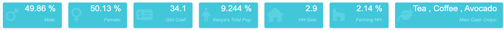

Dive into the local Economic and Social Landscape of Kenya
Why Africa?
For a considerable portion of human history, Africa has been overlooked as a key region for foreign investments due to two key reasons. The first being that there is a longer time horizon to see one’s return on investment, and secondly the low access to high quality data, and accurate information. Yet as easily seen in our graphs below, Africa, and specifically Sub-Saharan Africa has seen a steady increase in their GDP compared to the rest of the world. As the political instability has begun to subside throughout the region many countries in Sub-Saharan Africa have been able to develop and industrialize their economy. Many countries have been able to move away from predominantly agriculture and mining based economies to manufacturing and service based economies. Therefore Sub-Saharan Africa has become more open to more complex and sustainable corporate foreign investments over the last decade, and has the potential to shape the global economic landscape as we move forwards and look towards the rest of the 21st century.
Another key reason as to why Sub-Saharan Africa is an attractive investment option is due to the overall steady decline in year over year GDP growth for many developed and developing countries. A principal cause for this is due to the change in the demographic changes in such countries. Many of these countries suffer from an aging population which has a detrimental impact on the growth of the Labor Market. Other demographic indicators such as fertility rates, education, and income inequality have caused these countries’ economies to stagnate or in some instances even decline. Sub-Saharan Africa on the other hand has seen a significant improvement for these demographic indicators. Many of these countries have an extremely young population, which will help drive the growth of their labor market. Furthermore they have seen an improvement in healthcare, education, and many other demographic metrics which will allow them to sustain an expanding economy.
With the rising economic potential in Sub-Saharan Africa, it is imperative that we close the gap of high quality, accurate socioeconomic data. As stated previously one of the main detriments to investing in this region has been due to the lack of accurate local information. Many institutions such as USAID, the UN, and World Bank, track country-level information very closely, but accessing local information within a specific country is extremely limited and cumbersome. Micro data is essential to clearly understanding the economic potential of an investment in a country, and without such information can have a detrimental impact on the sustainability of a foreign corporate investment. Therefore we hope to illustrate through our example below how one can potentially aggregate and model historical trends and project future trends using the limited historical data available. Such models can potentially guide policymakers, both national and international, in making key investment decisions of a critical nature that can benefit the region and its countries.
Young Labor Force
Decrease in Political Instability
Improved Healthcare
Country GDP 2020 (% of World GDP)
Why Kenya?
Within Sub-Saharan Africa, Kenya would be a prime location for future long term foreign corporate investment due to the changes the country has made in recent years. The country has been able to develop the right combination of a politically stable environment and government focus on improving key demographics, to help improve and diversify the economy.
Kenya has made staggering strides in developing the country’s political environment, especially after passing their new constitution in 2010. Their new constitution enacted a bicameral legislative house, devolved county government, and a constitutionally tenured judiciary and electoral body. This was a crucial step towards moving away from historical corruptive government practices, and pushing towards a more decentralized democratic nation.
Furthermore Kenya has had a significant increase in their younger population over the past decade, and one of the Country’s main objectives is to continue to improve on their ability to provide better healthcare and education to this younger demographic. This will not only help provide the country a large and more specialized labor force, but also help improve the poverty level seen throughout the country, especially in rural regions.
Even though the country has seen some hardships due to the Ukraine War and the global rise in inflation, it has still been able to limit the negative impact of these outside negative forces in comparison to many other countries around the world as seen in the CHART BELOW.. Therefore we believe that Kenya is a major area of opportunity to focus on while exploring possible investment opportunities.
Specialized Younger Labor Force
Decentralized Democratic Government
Expanding Economy
Compare GDP from 2000 - 2021
Indexed GDP as of 2000(Constant $US 2015)
Integrity of Historical Data
Aggregating sub-national historical data in Kenya, as well as other countries in sub-Saharan Africa is very difficult due to the numerous governmental and institutional changes that have occurred in the region. There are many global non-profit institutions, such as the UN and the World Bank, that collect data on key socioeconomic indicators on a national-level, but there are very few that collect this information on a sub-national level. Yet, as a foreign corporate investor, understanding the local socioeconomic landscape is key to making a sound investments in sub-Saharan Africa.
There are a few organizations that have closely watched and surveyed Kenya’s progress on a sub-national level, such as DHS and KNBS. Although, there are a few key issues regarding the data collection process historically and the hurdles faced when attempting to understand the historical trends of the country’s socioeconomic indicators on a sub-national level. Before 2009, actual reported surveyed data was collected on a province-level, only starting in 2009 (for KNBS Census), and 2009/2014(DHS) were the county-level data reported. This is a crucial issue since in 2010 passed a new constitution that enacted devolved county governments. The other issue is the inconsistency of the type of data collected, they surveyed data differs from year to year. Finally, many other institutions that do provide historical sub-national information tend to estimate using DHS and the UN Projection model. The key issue with using such models is that many of the data points are health focused due to the immense amount of global funding provided to Kenya and other similar countries to improve health care in the region. Many of these indicators are not directly interpreted as an indicator of future economic growth, but as you will see below even such modeled information can indicate the future trend for key economic factors.
Overview of Models
We developed our own custom models to understand the historical county-level trends of some adjusted key economic indicators.
We've used a linear regression model using the KNBS’s reported GCP from (2013 - 2020) as a % of Kenya’s Total GVA to understand the possible historical trend of a county’s GCP.
We've used the reported four-year (2017-2020) average sector-level GCP along with the back-casted regressed GCP share of Kenya’s total GDP to understand the historical sector level trends by county.
Furthermore, we've used the IHME’s Modeled Average Years of Education based on DHS surveys by Gender to develop a county specific autoregressive model to understand both historical and future trends of education by county.
Finally we used the UN’s subnational custom r simulation to project population, TFR, and Demographic Breakdown to the year 2050. We've used IHME’s estimated TFR and Mortality Rate by county (using the 5yr average from DHS) as inputs for the custom simulation. A key aspect to remember is that we were unable to use the migration parameter due to the fact such information is not available on a local-level, therefore the real modeled value may be slightly higher than the reported value from KNBS.
Key Drivers
Given the very limited sources of accurate data currently available for Kenya (e.g. Garissa’s census crisis,
high fluctuation of gross county product (GCP) (defined as a proportion of Kenya's GVA attributed to each county) in numerous counties
within Kenya, etc…), our team has decided to focus on bridging the gap between sources and accessibility by building a tool that allows users to visualize and further explore key indicators that can provide some color as to what is occurring in Kenya locally.
With this aggregation of data and back-casting of current data, users are able to
understand the future trends of economic growth on the county-level in Kenya and understand how key local-social indicators impact economic growth in an emerging country.
We hope that this tool will provide policymakers and investors a window into the future economic trends of each county and guide their decision-making process while implementing new policies and making potential investments within Kenya.
A key aspect to keep in mind is our ability to measure the accuracy of our data to the real values reported. As mentioned above until, 2010, Kenya was divided into provinces, and only after the ratification of their new constitution in 2010 has Kenya started monitoring micro-level data by county. Furthermore, they have only started reporting some of these socioeconomic county-level indicators in 2013 on a yearly basis, and have expanded sector level indicators in 2017. Therefore, we have little references as to how accurate our models are compared to the actual reported real value results for each specific county historically. To accommodate for these restrictions we compared our results to the data provided by DHS (since they reported their information at 5-year intervals using geospatial locations) and the average MSE ranged from 0.0038
0.34914 depending on the county for ASFR, Years of Education, and Household Size for the years 1998-2014. Using these metrics we were able to see that our models do provide an accurate representation of the trends seen based on geospatial locations within the newly created county boundaries historically.
Key applications of our tool are identifying key potential trends of a county that can indicate a county's potential of sustainable economic diversification and growth. Some key indications of such growth would be seeing the growth in the youth population, upward trend in education, specifically for women, steeper downward trend in TFR, even gender breakdown, and slowly reducing agriculture sector.
Increase in Youth Population
Increase in Women's Education
Steeper Decline in TFR
Sustainable Economic Diversification
(Below are Interactive Screenshots from our Dashboard)
Key applications of our tool include identifying key trends in socioeconomic indicators that could potentially identify local areas that would help expand their already diversifying economy. Some key indicators would be seeing the growth in the youth population, trends in education and TFR, gender breakdown, and sector level diversification in the county's economy.
Tab 1: Interactive Map
This tab allows the user to explore both reported and modeled data by geolocation of the county on a map. In the top right corner we have provided the option of adjusting the year of the map you would like to see as well as the type of map you would like to see. There are three types of maps: GCP(Modeled), the Gini Index (Reported), and GCP YoY growth (Modeled), and each county is highlighted according to the map selected. By clicking on a specific the county within the map, the left hand panel will present the individual metrics for the specific county compared to the rest of the counties.
This tab provides both reported information from the most recent census data (2019) and our custom models that use data from a variety of sources
2019 Census Reported County Information by KNBS
This section provides the reported information demographic and agriculture breakdown by KNBS from the 2019 census for each county.
(As mentioned before agriculture is still the driving force of Kenya's economy)

Custom UN Sub-National Population Projections
This section presents the results from the UN’s subnational custom r simulation, mentioned above. We've provided the simulations projections for population, TFR, and Gender/Age Breakdown to the year 2050 and their corresponding confidence intervals.
(Hover over each graph to obtain more information through the tooltip)
Custom Models to Analyze Historical Trends
(Hover over each graph to obtain more information through the tooltip)
County Specific Autoregressive Model using IHME's Median Years of Education
Back-casted GCP Proportion Linear Regressive Model using reported 2013-2020 Data
Back-casted Sector 4-yr (2017-2020 Reported) Average using our GCP Proportion Linear Regressive Model
From our dashboard we were able to identify that this county has seen the largest increase in overall GCP (Gross County Product) from 2000 to 2020, even though it is landlocked as seen in our Interactive Map. Our dashboard was able to highlight the increase in Nyandarua's impact on the increase in Kenya's agricultural GDP, rising from 1% to 4%. This is the epitome of the type of information that would be beneficial to policymakers and investors explore further in a local level and identify the best use of invested funds.
Through our own preliminary research we were able to determine that farmers in the county cite a significant improvement in farming tactics, such as using fertilizer and manure, along with decreasing costs of raw materials provided significant gains over the recent years. Agriculture service offices have been providing farmers with knowledge on how to improve their farming practices using western research, and overall support. However, there are still some constraints on logistics, like poor roads that limit the distribution of goods leading to wasted crops, and more needed investments in upgrading technology that can improve the efficiency of agriculture logistics. What must also be recognized is that the significant improvement in Nyandarua's agriculture based economy can be replicated elsewhere, thus such information from our dashboard guiding force to help farmers in other counties with limited resources continue to strengthen Kenya's overall agricultural economy.
Another example, is how our dashboard was able to identify the rise in overall economies of major cities by using demographic indicators. For example, our dashboard shows that Kisumu, and other similar major counties,depict how Kenya's fertility rate is falling below the replacement rate and stabilizing between 1.5 and 1.7. Also, education, specifically for women, is generally increasing, signaling a transition to greater industrialization. These demographic trends lead to a peak in population around 2060.
After further exploration of the results for these indicators from our dashboard, we were able to determine that the increase in educational years, and decrease in fertility is due to Kenya's strong stance on bolstering education, rolling out a Free primary education program in 2003, revamping its curriculum in 2017, and increasing the supply of key materials, such as books, to the students in these counties. Providing such resources has allowed such cities and counties to maintain their economy, but not significantly expand their economy. This could possibly be due to the fact that resources such as teachers can be scarce, unlike supplies, where large teacher-student ratios are common. Further, focusing on educational personnel and providing incentives for individuals to become teachers through student loan forgiveness programs could ameliorate educational personnel constraints, and help build a more specialized younger labor force, which would improve the county's economy overall.
About Our Team
We would like to thank our Partner Microsoft Good Labs, specifically Lucas
Meyer for providing us with this wonderful opportunity. We would also like to thank our Professor,
Weiwei
Pan, and our Teaching Fellow, Sarah Raman, for
providing insightful guidance throughout our project.
Aditi Memani
Master of Science (S.M.), Computational Science and Engineering
aditimemani@g.harvard.edu
github: aditimemani-harvard
Geoff Liu
Master of Science (S.M.), Computational Science and Engineering
geoffreyliu@fas.harvard.edu
Angel Hsu
Master of Science (S.M.), Data Science
angelyinhuahsu@g.harvard.edu
github: angelhsu
Alex Kashi
Master of Science (S.M.), Computational Science and Engineering
Appendix
Kenya National Bureau of Statistics
Aggregated Data: Population ( Census 2019), Age Demographic ( Census 2019), Gender Demographic (Cenus 2019), GCP (2013-2020), GCP by Industry (2017-2020). Main Cash Crops (Census 2019), Farming Households (Census 2019), Average Household Size (Census 2019),
Source: Wiesmann, U., Kiteme, B., Mwangi, Z. (2019-2021). Socio-Economic Atlas of Kenya: Depicting the National Population Census by County and Sub-Location and Economic Survey. Second, revised edition. KNBS, Nairobi. CETRAD, Nanyuki. CDE, Bern. https://www.knbs.or.ke/
IHME: Global Burden of Disease Study 2019 (GBD 2019) 1990-2019
Aggregated Data: Median Number of Education Years, TFR, and Life Expectancy
Source: Global Burden of Disease Collaborative Network. Global Burden of Disease Study 2019 (GBD 2019) Life Expectancy and Healthy Life Expectancy 1990-2019. Seattle, United States of America: Institute for Health Metrics and Evaluation (IHME), 2020.
World Bank
Aggregated Data: Global, Country, and Country Sector-level GDP and GVA
Source: World Bank, World Development Indicators. (2021).
WorldPop: Demographic Breakdown by County
Aggregated Data: Population, Age Demographic, Gender Demographic
Source: WorldPop (www.worldpop.org - School of Geography and Environmental Science, University of Southampton; Department of Geography and Geosciences, University of Louisville; Departement de Geographie, Universite de Namur) and Center for International Earth Science Information Network (CIESIN), Columbia University (2018). Global High Resolution Population Denominators Project - Funded by The Bill and Melinda Gates Foundation (OPP1134076).
UN Custom Sub-national Population Model:
Data Inputs: IHME's county-level TFR & Life Expactancy, World Pop County-level population, UN's Country-level TFR, life expectancy, and migration
Summary: We used BayesTFR and BayesLife to project make and female expected life expectancy at birth and total fertility rate from Ševčíková et. al. (2018)
We then used BayesPop with those the projected life expectancy at birth and total fertility rate to forecast future population.
Package Information: Ševčíková H, Raftery AE (2016). “bayesPop: Probabilistic Population Projections.” Journal of Statistical Software, 75(5), 1–29. doi:10.18637/jss.v075.i05.
DHS Data - Used as a comparative data source
Aggregated Data: pre-2010 Historical geospatial location data for TFR, province-level location, education, household size, Median Number of Education Years, ASFR
Spatial Data Source: ICF. The DHS Program Spatial Data Repository. Funded by USAID. spatialdata.dhsprogram.com. [October, 2022].
Survey Data Source: Kenya National Bureau of Statistics, Ministry of Health/Kenya, National AIDS Control Council/Kenya, Kenya Medical Research Institute, and National Council for Population and Development/Kenya. (1989-2020). Kenya Demographic and Health Survey (1989-2014). Rockville, MD, USA